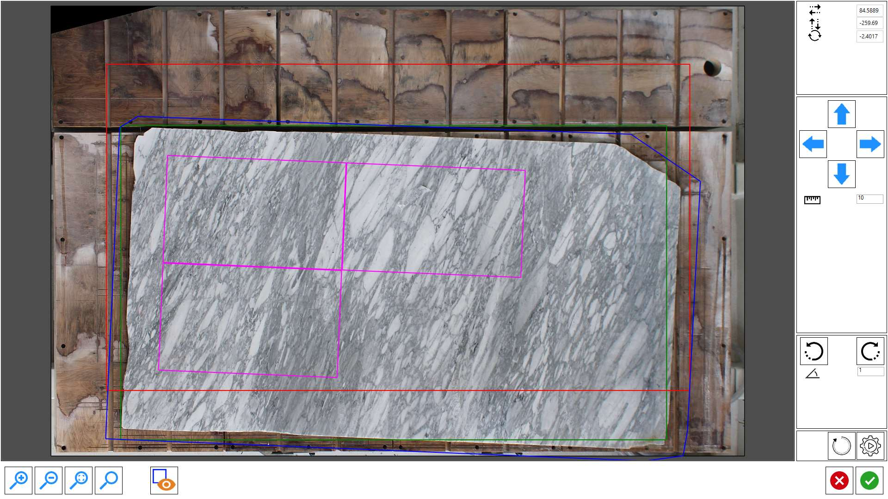

This function allows the operator to load a cutting project prepared in the office and adapt it to the real position and dimension of the slab present in machine.

Buttons
 | Offset axis X |
 | Offset axis Y |
 | Rotation |
 | Directional move arrows |
 | Clockwise/Counterclockwise Rotation |
 | Reset positioning |
 | Automatic Slab Matching |
 | Visible/Hide pieces |
How to use SlabMatching
The operator can plan in the office the cutting project of a slab by reference to a photo taken from the tripod, and save it.

After taking a picture of the slab on the workbench, the operator on the machine can load the project file saved in the office using the SlabMatching functionality.

Inside the window that opens, it is shown the picture took from the work bench, and the preview of the perimeter of the slab programmed in office.
The elements that you see on screen represent:
Blue | Perimeter of the slab programmed in office. |
Fuchsia | Perimeter of the pieces inside the programmed slab in the office. |
Red | Original slab position programmed in office. |
Green | Slab position present on work bench. |
The operator can move and/or rotate the perimeter within the work area to the correct position by dragging it, using the arrows or by means of the button for the automatic alignment.
Once the perimeter is correctly positioned, you press on confirm and you will see the pieces positioned as in the file on the actual slab.